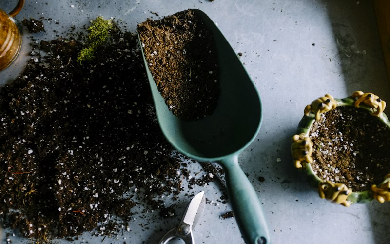

Productivity
The two-hour morning: how we plan deep work around meetings
A simple calendar rule gave our team back ten focused hours a week. Here is the template we use and what we had to give up.
A simple calendar rule gave our team back ten focused hours a week. Here is the template we use and what we had to give up.
We rebuilt our card components to respond to their slot instead of the viewport. Fewer breakpoints, fewer bugs, one surprise.

Tomatoes do not care about your roadmap. Notes from a season of planting, failing and trying again every weekend.